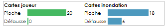

Les aventuriers débarquent sur l'île interdite.
Leur but est de decouvrir ensemble les quatre trésors cachés dans les temples de l'île puis de réussir à la quitter avant qu'elle ne sombre dans les tréfonds de l'océan pacifique.
A peine arrivés, les aventuriers peuvent voir des pans entier de l'île s'enfoncer peu à peu au gré de terribles inondations. Il va falloir faire vite. Il va falloir co-opérer.
🌊🌊🌊🌊🌊🌊
Chaque personnage, à son tour, joue les trois phases suivantes :
1. actions de joueur : le joueur effectue trois actions de son choix.
2. tirage de 2 cartes : le joueur tire deux cartes de ressources. Elles peuvent être : des cartes trésor, de l'équipement, une carte inondation.
3. inondations : Des parties de l'île sont inondées et peuvent disparaitre définitivement.
Comment trouver un trésor :
Il y a quatre trésors différents à trouver : la coupe, le sceptre, la statue, le cristal.
Le joueur doit être muni de quatres cartes trésor similaires et se trouver sur le temple correspondant.
 +
+
+
+
🛕 = 🏺
+
+
+
+
🛕 = 🏺
Il peut ainsi effectuer l'action 'trouver un trésor'. Le trésor est alors ajouté au butin de l'équipe.
S'il s'agit du quatrième trésor, l'équipe doit alors quitter l'île au plus vite.
Comment quitter l'île : en fin de partie, lorsqu'ils ont les quatre trésors en leur possession, tout les aventuriers doivent se rendre sur la case héliport et jouer une carte hélicoptère. Une fois tous à bord, l'hélicoptère décolle en emportant les aventuriers et leurs trésors. La partie est gagnée.
1. LES ACTIONS :
A chaque tour, un aventurier peut jouer trois actions parmi lesquelles :
se déplacer : le jouer peut déplacer son personnage sur une case adjacente, même inondée.
assécher : le joueur peut assécher une case inondée adjacente. Cette case retrouve son statut initial.
se reposer : le joueur fini son tour sans ne rien faire.
donner une carte : si un joueur est sur la même case qu'un autre joueur, il peut dépenser une action pour lui donner une carte de sa main.
trouver un trésor : S'il se trouve sur une case temple et qu'il a quatre cartes du trésor correspondant, le joueur peut trouver le trésor. Le trésor est alors ajouté au butin de l'équipe. S'il s'agit du quatrième trésor trouvé, l'équipe doit alors quitter l'île.
ACTIONS SPÉCIALES :
Chaque personnages a une action qui lui est propre.
La plongeuse peut nager : Elle peut traverser gratuitement les cases innondées et submergées lors de ses déplacements.
L'ingénieure peut assécher deux cases pour une action.
Le pilote peut se déplacer sur n'importe quelle case pour une action en volant (une seule fois par tour).
L'explorateur peut se déplacer ou assécher orthogonalement et diagonalement.
Le navigateur peut déplacer un autre joueur de deux cases pour une action.
Le messager, pour une action, peut donner une de ses cartes à un autre aventurier même s'il n'est pas sur la même case que le destinataire.
2. TIRER DEUX CARTES RESSOURCES
Après avoir effecué ses trois actions, le joueur tire deux cartes ressources.
Ces cartes peuvent représenter un des quatres trésors. Il faut en rassembler 4 identique pour prétendre trouver le trésor.
 Carte Hélicoptère : Cette carte peut être utilisée à n'importe quel moment. Un ou plusieurs personnages sur une même case peuvent s'envoler et aterrir sur n'importe quelle autre case. Cette carte est défaussée après son utilisation.
Carte Hélicoptère : Cette carte peut être utilisée à n'importe quel moment. Un ou plusieurs personnages sur une même case peuvent s'envoler et aterrir sur n'importe quelle autre case. Cette carte est défaussée après son utilisation.
 Carte Sac de Sable : Cette carte peut être utilisée à n'importe quel moment. Le joueur peut assécher une case de son choix. Cette carte est défaussée après son utilisation.
Carte Sac de Sable : Cette carte peut être utilisée à n'importe quel moment. Le joueur peut assécher une case de son choix. Cette carte est défaussée après son utilisation.
 Carte inondation : La vitesse d'inondation augmente de 1. Les cartes des cases innondées sont replacées au dessus de la pioche inondation, ce qui veut dire qu'elles vont bientôt ressortir !
Carte inondation : La vitesse d'inondation augmente de 1. Les cartes des cases innondées sont replacées au dessus de la pioche inondation, ce qui veut dire qu'elles vont bientôt ressortir !
⚠ Attention ⚠ A aucun moment, un joueur ne peut avoir plus de 5 cartes en main. Il doit se débarasser de son surplus de carte en les jetant ou en les jouant immédiatement.
3. INONDATIONS : Des cartes de cases sont tirées de la pioche inondation. Ces cases sont alors inondées. Lorsqu'une case inondée est de nouveau inondée, elle coule définitivement ! La structure qu'elle contenait éventuellement (temple ou héliport) disparait à jamais.
Le nombre de cartes tirées dépend de l'echelle d'inondation. Ce nombre augmente au fur et à mesure de la partie lorsque sont tirées des cartes inondation.
Si un joueur se trouve sur une case qui disparait, il doit immédiatement se réfugier sur une case adjacente ou utiliser un de ses pouvoirs pour regagner la terre ferme.

indique combien de cartes inondation sont tirées à chaque phase inondation.
 montre l'état des piles de cartes ressources et inondations.
A noter :
Il y a quatres trésors à trouver : la Coupe, le Sceptre, la Statue, le Cristal
Pour chaque trésor, il y a deux temples sur deux cases différentes.
Si les deux temples d'un même trésor sombrent avant que celui ci ne soit découvert, il n'y a plus moyen de le trouver, la partie est perdue. 👎
Si la case héliport sombre, les aventuriers ne pourront plus quitter l'île. La partie est perdue. 👎
Si l'echelle d'inondation atteind un niveau critique, la partie est perdue. 👎
Si un aventurier se trouve sur une case qui sombre et n'a aucun moyen de se réfugier sur une autre case. Il se noie, la partie est perdue.👎
Si tous les aventuriers sont rassemblés sur l'héliport, que les quatres trésors ont été trouvés et qu'une carte hélicoptère est jouée, la partie est gagnée ! 👍👏🌟
Bonne chasse au trésors sur L'ile interdite !
🈲